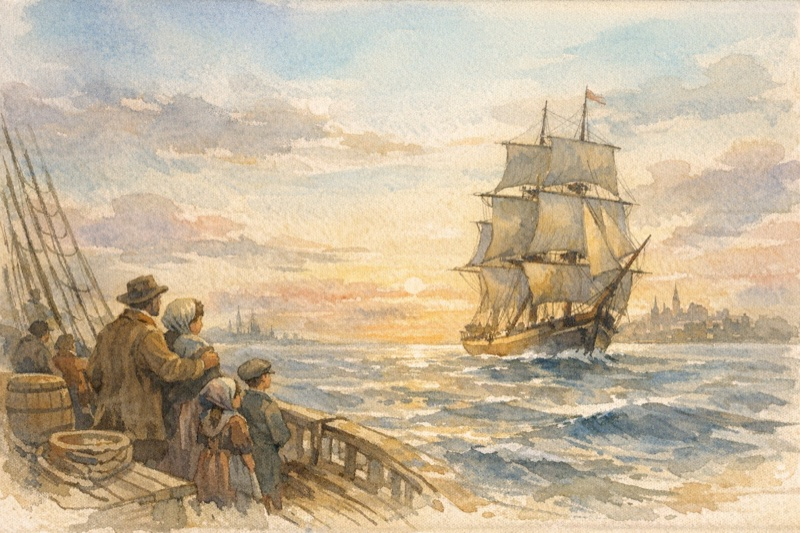

Frederick Kuthe (c. 1822–1900)
Relationship: 3rd great-grandfather (Kuthe line)
German Immigrant, Missouri Farmer
Frederick Kuthe (also recorded as George Frederick Kuthe) was born around 1822 in or near Vöhl, in the Waldeck region of Hesse, Germany. Family tradition names his father as Andreas Kuthe (born c. 1798 in Hesse), though this remains unverified.1

In June 1845, Frederick emigrated from Germany as part of a larger Kuthe family group. A passenger manifest for the ship Olbers, sailing from Bremen to New Orleans, lists a Küthe family from Vöhl that included an 18-year-old "Friederich" along with siblings—most notably a sister Maria (age 20), who later appeared in American records as Mary C. Kuthe.2 A biography of Louis Schleicher, a baker in Lancaster, Ohio, confirms that he married "Miss Mary C. Kuthe, who was born in Germany in 1824, and came to America in 1845"—strong evidence that Frederick and Mary were siblings who immigrated together.3
After arriving in America, Frederick initially settled in Palmyra, Marion County, Missouri. By the 1850s he had moved south to Dent County, which had been organized in 1851. The surname Kuthe proved difficult for English-speaking clerks, appearing in records variously as Kuethe, Küthe, Kuth, Kuthy, Koothe, and even "Kite."
On January 19, 1868, Frederick married Sarah Ann Patterson (née Steagall) in Dent County.4 Sarah (born c. 1837) was a widow—her first husband had been a man named Patterson, and Steagall was her maiden name. The Dent County marriage register (Book A, 1851–1870) records the union of "KUTHE, GEORGE F." to "Sarah A. Patterson."5 The couple settled near Salem, the county seat.

Frederick and Sarah had six children who survived to adulthood: William, Mary (who married Louis Schmit), George Washington Kuthe (1869–1925), Catherine, Susan, and Adam.6 Their son George was born October 14, 1869, in Salem and would later migrate to Oregon and then Arizona.
Tragedy struck the family when Sarah Ann died in 1876 at approximately 39 years of age, leaving Frederick a widower with young children to raise.7 By the 1880 census, Frederick (then about 57) appears as head of household with several children still at home, including 10-year-old George.
Frederick lived into old age, dying on February 10, 1900, in Dent County, Missouri, at approximately 77 years old.8 He was likely buried in or near Salem, though the exact location of his grave remains unconfirmed. Missouri statewide death registration did not begin until 1910, so no state death certificate exists.
Frederick Kuthe's life exemplified the German immigrant experience in rural Missouri—arriving as a young man, establishing a farm, marrying into a local family, and raising children who straddled German heritage and American identity. His descendants would scatter across the country: son George moved west to Oregon and Arizona, while daughter Mary remained in Missouri. The family's German Lutheran or Reformed faith likely connected them to the small but persistent German immigrant community in the Ozarks.
Notes:
Family tradition via compiled genealogies; no primary source located for Andreas Kuthe.↩
ISTG (Immigrant Ships Transcribers Guild), manifest of the Olbers from Bremen to New Orleans, 13 June 1845.↩
Louis Schleicher biography, noting his 1847 marriage to Mary C. Kuthe "born in Germany in 1824, and came to America in 1845."↩
Dent County, MO Marriage Book A, 1851–1870.↩
USGenWeb Archives and Genealogy Trails transcription of Dent County marriages.↩
Dent County local history (c. 1880s), listing "six living children: William, Mary (Mrs. Schmit), George, Catherine, Susan, Adam."↩
Compiled family records; no death certificate exists for 1876 Missouri.↩
Local records and family sources; Frederick is absent from the 1900 census, consistent with a February 1900 death.↩